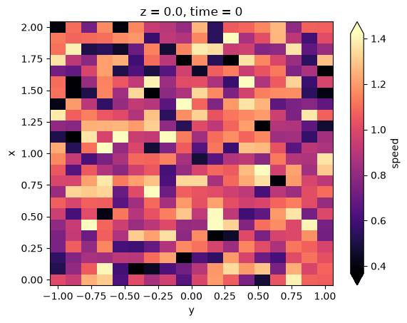

Write Derived Results Back To Raw Binary Files#
This notebook focuses on the write side of xarray-binfile. The workflow is:
open a binary dataset lazily with xarray and Dask
build a derived result without immediately loading everything
compute a small summary when you need an actual value
write a derived array back to
.binfiles with.binary_engine.to_file(...)read the result again to verify the round trip
Note
Raw binary output is useful when you must match an existing external convention. If you control the output format, prefer NetCDF or Zarr for portability, metadata preservation, and interoperability across tools.
import pathlib
import re
import tempfile
from dataclasses import dataclass
import numpy as np
import xarray as xr
from xarray_binfile import WriteSpecs
from xarray_binfile.tutorial import DatasetGenerator, FileSpecsGetter
input_directory_holder = tempfile.TemporaryDirectory()
output_directory_holder = tempfile.TemporaryDirectory()
input_directory = pathlib.Path(input_directory_holder.name)
output_directory = pathlib.Path(output_directory_holder.name)
input_directory, output_directory
(PosixPath('/tmp/tmpj7cev_tt'), PosixPath('/tmp/tmpnjlhk8e_'))
base_coords = {
"x": np.linspace(0.0, 2.0, num=24, dtype=np.float32),
"y": np.linspace(-1.0, 1.0, num=18, dtype=np.float32),
"z": np.linspace(0.0, 1.5, num=12, dtype=np.float32),
}
input_specs_getter = FileSpecsGetter(
base_coords=base_coords,
dtype=np.float32,
filename_template="{name}-{digits:04}.bin",
filename_regex=re.compile(r"(?P<name>\w+)-(?P<digits>\d{4})\.bin"),
)
dataset_generator = DatasetGenerator(input_specs_getter.reader)
filenames = (
input_specs_getter.filename_template.format(name=name, digits=step)
for name in ("ux", "uy", "uz")
for step in range(8)
)
source_dataset = dataset_generator(map(pathlib.Path, filenames))
source_dataset.binary_engine.to_file(input_specs_getter.writer, input_directory)
sorted(path.name for path in input_directory.glob("*.bin"))[:6]
['ux-0000.bin',
'ux-0001.bin',
'ux-0002.bin',
'ux-0003.bin',
'ux-0004.bin',
'ux-0005.bin']
lazy_dataset = xr.open_mfdataset(
sorted(input_directory.glob("*.bin")),
engine="binfile",
read_specs_getter=input_specs_getter.reader,
chunks={"x": 6, "y": 6, "z": 4, "time": 2},
parallel=True,
)
lazy_dataset
<xarray.Dataset> Size: 498kB
Dimensions: (x: 24, y: 18, z: 12, time: 8)
Coordinates:
* x (x) float32 96B 0.0 0.08696 0.1739 0.2609 ... 1.739 1.826 1.913 2.0
* y (y) float32 72B -1.0 -0.8824 -0.7647 -0.6471 ... 0.7647 0.8824 1.0
* z (z) float32 48B 0.0 0.1364 0.2727 0.4091 ... 1.091 1.227 1.364 1.5
* time (time) int64 64B 0 1 2 3 4 5 6 7
Data variables:
ux (x, y, z, time) float32 166kB dask.array<chunksize=(6, 6, 4, 1), meta=np.ndarray>
uy (x, y, z, time) float32 166kB dask.array<chunksize=(6, 6, 4, 1), meta=np.ndarray>
uz (x, y, z, time) float32 166kB dask.array<chunksize=(6, 6, 4, 1), meta=np.ndarray>speed = np.sqrt(
lazy_dataset["ux"] ** 2 + lazy_dataset["uy"] ** 2 + lazy_dataset["uz"] ** 2
).rename("speed")
speed
<xarray.DataArray 'speed' (x: 24, y: 18, z: 12, time: 8)> Size: 166kB dask.array<sqrt, shape=(24, 18, 12, 8), dtype=float32, chunksize=(6, 6, 4, 1), chunktype=numpy.ndarray> Coordinates: * x (x) float32 96B 0.0 0.08696 0.1739 0.2609 ... 1.739 1.826 1.913 2.0 * y (y) float32 72B -1.0 -0.8824 -0.7647 -0.6471 ... 0.7647 0.8824 1.0 * z (z) float32 48B 0.0 0.1364 0.2727 0.4091 ... 1.091 1.227 1.364 1.5 * time (time) int64 64B 0 1 2 3 4 5 6 7
The derived speed array is still lazy. You can compute a lightweight summary first, then decide whether to persist a full result.
speed_time_series = speed.mean(dim=("x", "y", "z")).compute()
speed_time_series
<xarray.DataArray 'speed' (time: 8)> Size: 32B
array([0.9637632 , 0.9667021 , 0.9645986 , 0.95585877, 0.9610805 ,
0.95524615, 0.9609951 , 0.95937735], dtype=float32)
Coordinates:
* time (time) int64 64B 0 1 2 3 4 5 6 7Custom write specifications#
FileSpecsGetter.writer is useful when your output convention matches the tutorial helper. If you need a different layout, implement a callable compatible with WriteSpecsGetterProtocol.
Setting dtype on each WriteSpecs pins the on-disk data type (including byte order): the values are cast right before serialization, so the files always match what the corresponding read getter declares. When dtype is omitted, the in-memory dtype and native byte order are written as-is.
@dataclass(frozen=True)
class DerivedWriteSpecsGetter:
prefix: str = "derived"
base_dims: tuple[str, ...] = ("x", "y", "z")
dtype: np.dtype = np.float32
def __call__(self, data_array: xr.DataArray):
for time_value in data_array.coords["time"].values:
timestep = int(time_value)
yield WriteSpecs(
filename=f"{self.prefix}-{data_array.name}-{timestep:04}.bin",
sub_array=data_array.sel(time=timestep).transpose(
*self.base_dims, missing_dims="raise"
),
dtype=self.dtype,
)
derived_write_specs_getter = DerivedWriteSpecsGetter()
derived_write_specs_getter
DerivedWriteSpecsGetter(prefix='derived', base_dims=('x', 'y', 'z'), dtype=<class 'numpy.float32'>)
speed.binary_engine.to_file(derived_write_specs_getter, output_directory)
sorted(path.name for path in output_directory.glob("*.bin"))[:6]
['derived-speed-0000.bin',
'derived-speed-0001.bin',
'derived-speed-0002.bin',
'derived-speed-0003.bin',
'derived-speed-0004.bin',
'derived-speed-0005.bin']
Writing triggers the actual per-file materialization of each selected slice. That is often exactly what you want when handing data back to an external solver or post-processing pipeline.
Warning
.binary_engine.to_file(...) never writes a file partially. Each sub_array is fully loaded into memory (a Dask compute for lazy data) and the whole file is written in a single pass — there is no appending, patching, or resuming. Each file is also written atomically: the bytes go to a unique temporary directory inside the destination and are moved into place with os.replace only when complete, so an interrupted write never leaves a truncated file behind. This keeps the on-disk files consistent instead of risking partially-updated, corrupted content, but it means every individual output file must fit in memory. Plan your chunks and the number of output files accordingly, for example one file per time step. If you need streaming or partial writes, use one of the other xarray-supported formats such as NetCDF or Zarr.
output_specs_getter = FileSpecsGetter(
base_coords=base_coords,
dtype=np.float32,
filename_template="derived-{name}-{digits:04}.bin",
filename_regex=re.compile(r"derived-(?P<name>\w+)-(?P<digits>\d{4})\.bin"),
)
roundtrip_dataset = xr.open_mfdataset(
sorted(output_directory.glob("derived-*.bin")),
engine="binfile",
read_specs_getter=output_specs_getter.reader,
chunks={"time": 2},
parallel=True,
)
roundtrip_dataset
<xarray.Dataset> Size: 166kB
Dimensions: (x: 24, y: 18, z: 12, time: 8)
Coordinates:
* x (x) float32 96B 0.0 0.08696 0.1739 0.2609 ... 1.739 1.826 1.913 2.0
* y (y) float32 72B -1.0 -0.8824 -0.7647 -0.6471 ... 0.7647 0.8824 1.0
* z (z) float32 48B 0.0 0.1364 0.2727 0.4091 ... 1.091 1.227 1.364 1.5
* time (time) int64 64B 0 1 2 3 4 5 6 7
Data variables:
speed (x, y, z, time) float32 166kB dask.array<chunksize=(24, 18, 12, 1), meta=np.ndarray>computed_speed = speed.compute().to_dataset()
xr.testing.assert_allclose(roundtrip_dataset.compute(), computed_speed)
computed_speed["speed"].isel(time=0, z=0).plot(cmap="magma", robust=True)
<matplotlib.collections.QuadMesh at 0x7f76af7ba510>

For general exchange and long-term storage, use xarray’s standard formats when possible: Dataset.to_netcdf(...) and Dataset.to_zarr(...) preserve metadata and make collaboration easier. Use raw binary output when you need strict compatibility with an external file convention.